1930 - 1950: O Início Experimental
Os desenhos animados nasceram nas telas de cinema e começaram a migrar para a televisão de forma
experimental na década de 1930. Tecnologicamente, as transmissões eram em preto e branco, com
baixíssima resolução. A produção das animações era um processo puramente artesanal e exaustivo:
cada quadro era desenhado e pintado à mão em folhas transparentes de acetato.
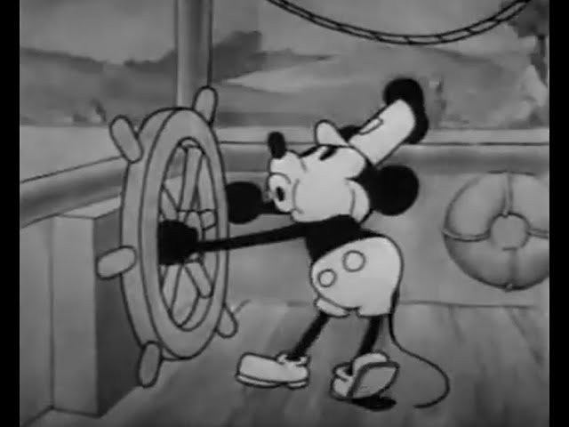
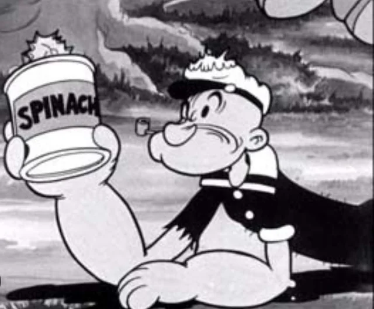
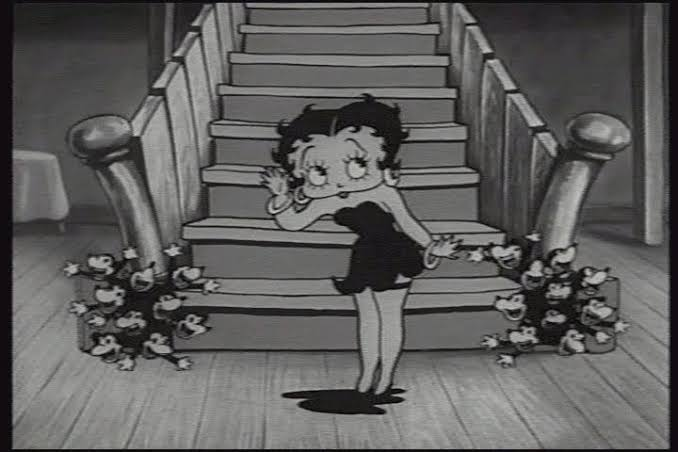
1960 - 1970: A Era de Ouro da TV
Esta era foi marcada pela popularização em massa da televisão colorida, transformando os desenhos no principal
produto infantil e abrindo espaço no horário nobre. Para suprir a enorme demanda da TV e baratear os custos,
os estúdios criaram a técnica da "Animação Limitada", reaproveitando cenários de fundo e animando apenas partes
específicas dos personagens.
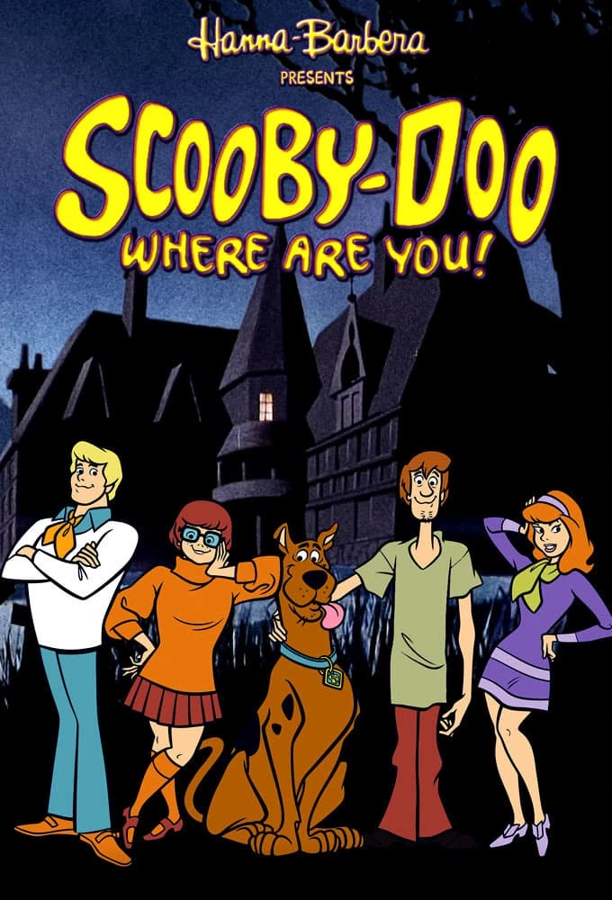
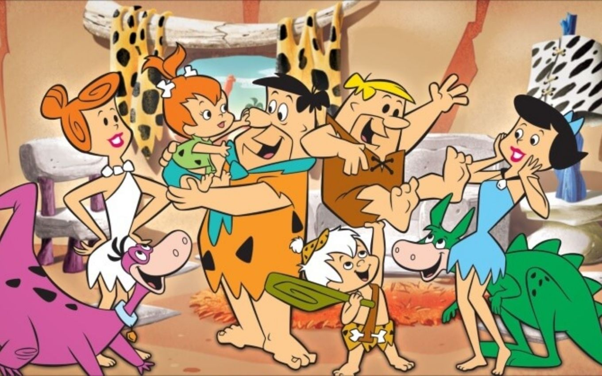
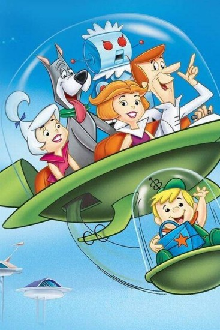
1980 - 1990: Comercialização e Transição Digital
Os anos 80 foram dominados por desenhos financiados por indústrias de brinquedos e pela forte terceirização da mão
de obra. Já nos anos 90, a tecnologia mudou drasticamente com a introdução da Computação Gráfica (CGI) e de softwares
de colorização digital. Foi também o período da explosão global dos animes e das animações para adultos.
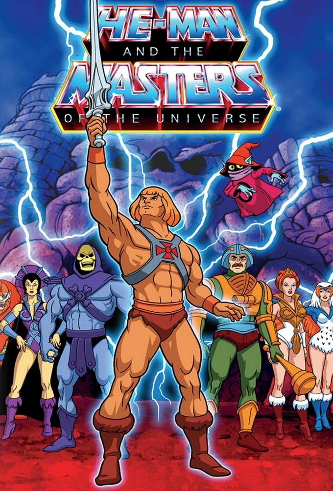

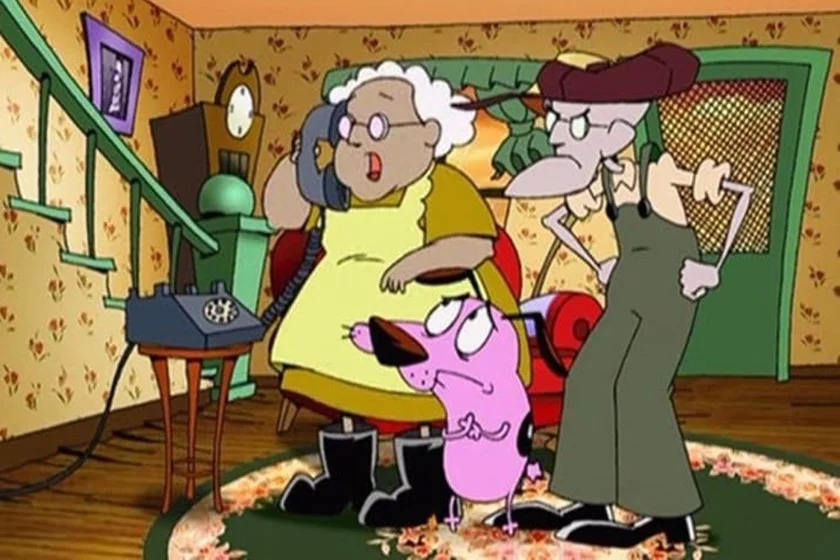
2000 ~ Atualidade: Era Digital e Streaming
Nesta era atual, os desenhos passaram a ser criados diretamente em mesas digitalizadoras usando softwares de animação
vetorial ou modelagem em 3D. As transmissões abandonaram o formato antigo (4:3) para adotar o Widescreen (16:9) em Alta
Definição (HD/4K). Além disso, a distribuição migrou da TV aberta para as plataformas de streaming.

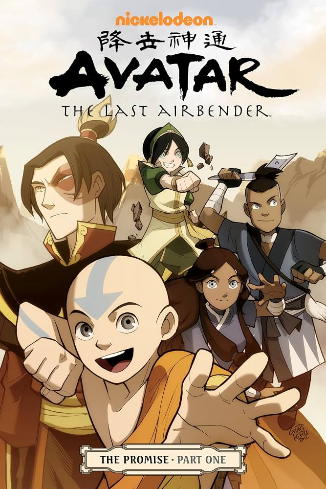
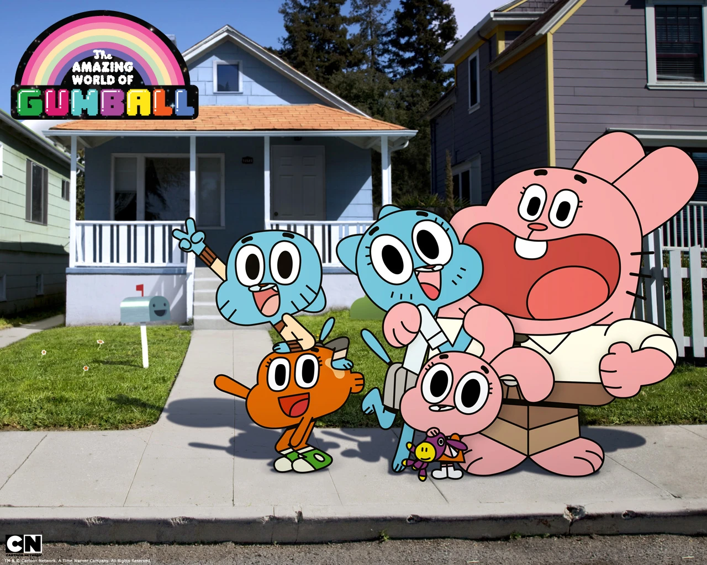

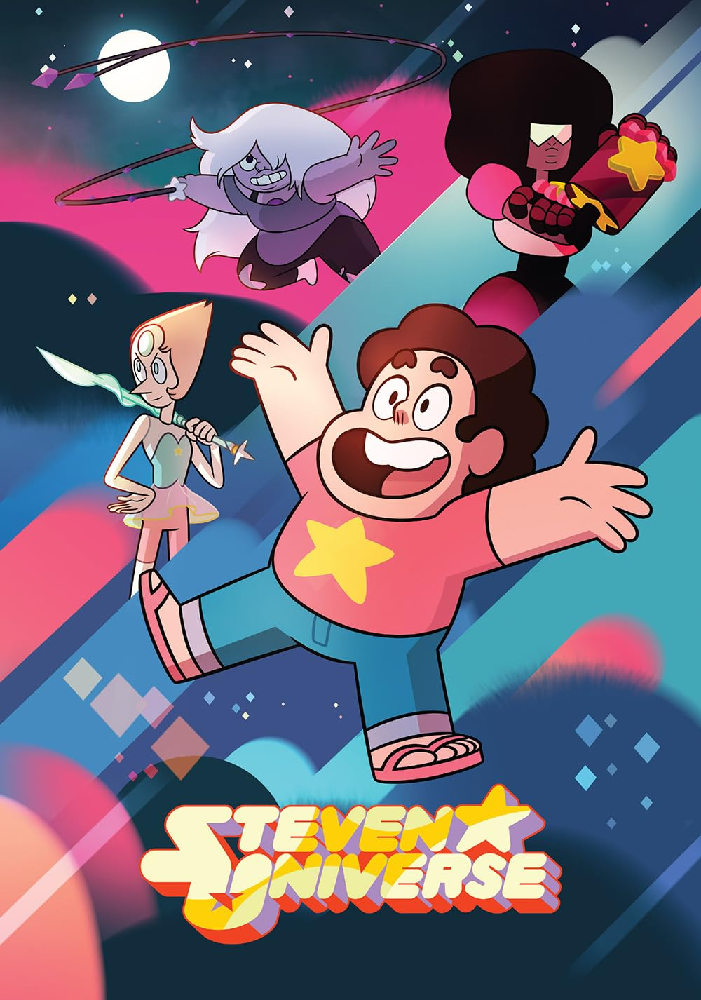